지적산업기사 (2019-04-27 기출문제)
1과목: 지적측량
1. 지적삼각점성과표에 기록·관리하여야 하는 사항이 아닌 것은?
- 경계점좌표
- 자오선수차
- 소재지와 측량연월일
- 지적삼각점의 명칭과 기준 원점명
(정답률: 54%)

2. 축척 1200분의 1 지역에서 평판측량을 도선법으로 하는 경우 일반적인 도선의 거리제한으로 옳은 것은?
- 68 m 이내
- 86 m 이내
- 96 m 이내
- 100 m 이내
(정답률: 64%)
3. 지적측량에서 측량계산의 끝수처리가 잘못된 것은?
- 12.6m2는 13m2
- 22.5m2는 22m2
- 13.5m2는 14m2
- 10.5m2는 11m2
(정답률: 73%)
4. 일반지역에서 축척이 6000분의 1인 임야도의 지상 도곽선 규격(종선 × 횡선)으로 옳은 것은?
- 500m × 400m
- 1200m × 1000m
- 1250m × 1500m
- 2400m × 3000m
(정답률: 77%)
5. 지적기준점 표지설치의 점간거리 기준으로 옳은 것은?
- 지적삼각점 : 평균 2km 이상 5km 이하
- 지적도근점 : 평균 40m 이상 300m 이하
- 지적삼각보조점 : 평균 1km 이상 2km 이하
- 지적삼각보조점 : 다각망도선법에 따르는 경우 평균 2km 이하
(정답률: 77%)
6. 평판측량에서 경사거리 ℓ과 경사분획 n을 측정할 때 수평거리 L을 산출하는 공식은?
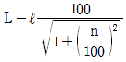
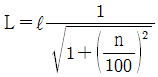
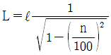
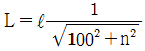
(정답률: 75%)
7. 지적도근점성과표에 기록·관리하여야 할 사항에 해당하지 않는 것은?
- 좌표
- 도선 등급
- 자오선수차
- 표지의 재질
(정답률: 65%)
8. 평판측량방법에 의한 세부측량 시 일반적인 방향선 또는 측선장의 도상길이로 옳지 않은 것은?
- 교회법은 10센티미터 이하
- 도선법은 10센티미터 이하
- 광파조준의에 의한 도선법은 30센티미터 이하
- 광파조준의에 의한 교회법은 30센티미터 이하
(정답률: 68%)
9. 미지점에 평판을 설치하여 그 점의 위치를 결정하기 위한 측량방법은?
- 전방교회법
- 측방교회법
- 후방교회법
- 측방과 전방교회법의 혼용
(정답률: 66%)
10. 다음 그림에서 측선 CD의 방위각(VCD)은?
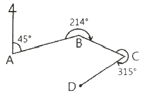
- 146°
- 214°
- 266°
- 326°
(정답률: 71%)
11. 지적도의 도곽선 수치는 원점으로부터 각각 얼마를 가산하여 사용할 수 있는가? (단, 제주도지역은 제외한다.)
- 종선 50만 m, 횡선 20만 m
- 종선 55만 m, 횡선 20만 m
- 종선 20만 m, 횡선 50만 m
- 종선 20만 m, 횡선 55만 m
(정답률: 80%)
12. 지적삼각보조점측량에 관한 설명으로 옳지 않은 것은?
- 영구표지를 설치하는 경우에는 시·군·구별로 일련번호를 부여한다.
- 지적삼각보조점은 측량지역별로 설치순서에 따라 일련번호를 부여한다.
- 지적삼각보조점은 교회망 또는 교점다각망으로 구성하여야 한다.
- 전파기 또는 광파기측량방법에 따라 다강망도선법으로 지적삼각보조점측량을 할 때에는 5점 이상의 기지점을 포함한 결합다각방식에 따른다.
(정답률: 59%)
13. 다음 중 지적측량을 실시하지 않아도 되는 경우는?
- 지적기준점을 정하는 경우
- 지적측량성과를 검사하는 경우
- 경계점을 지상에 복원하는 경우
- 토지를 합병하고 면적을 결정하는 경우
(정답률: 82%)
14. 필지의 면적측정 방법에 대한 설명으로 적합하지 않은 것은?
- 필지별 면적측정은 지상경계 및 도상좌표에 의한다.
- 전자면적측정기로 면적을 측정하는 경우 도상에서 2회 측정한다.
- 경계점 좌표등록부 시행지역은 좌표면적계산법으로 면적을 측정한다.
- 측정면적은 1천분의 1제곱미터까지 계산하여 10분의 1제곱미터 단위로 정한다.
(정답률: 52%)
15. 지적측량의 법률적 효력으로 옳지 않은 것은?
- 강제력
- 공정력
- 구인력
- 확정력
(정답률: 78%)
16. 삼각점과 지적기준점 등의 제도 방법으로 옳지 않은 것은?
- 지적도근점은 직경 2mm의 원으로 제도한다.
- 삼각점 및 지적기준점은 0.2mm 폭의 선으로 제도한다.
- 2등삼각점은 직경 1mm 및 2mm의 2중원으로 제도한다.
- 지적삼각점은 직경 3mm의 원으로 제도하고 원 안에 십자선을 표시한다.
(정답률: 72%)
17. 다각망도선법에 의한 지적삼각보조점측량 및 지적도근점측량을 시행하는 경우, 기지점간 직선상의 외부에 두는 지적삼각보조점 및 지적도근점의 선점은 기지점 직선과의 사이각을 얼마 이내로 하도록 규정하고 있는가?
- 10° 이내
- 20° 이내
- 30° 이내
- 40° 이내
(정답률: 68%)
18. 경위의측량방법에 따른 세부측량을 행하는 경우에 수평각의 측각공차는 1회 측정각과 2회 측정각의 평균값에 대한 교차를 얼마까지 허용하는가?
- 10초 이내
- 20초 이내
- 30초 이내
- 40초 이내
(정답률: 60%)
19. 교회법에 따른 지적삼각보조점의 관측 및 계산에 대한 기준으로 틀린 것은?
- 1방향각의 측각공차는 40초 이내로 한다.
- 관측은 10초독 이상의 경위의를 사용한다.
- 수평각 관측은 2대회의 방향관측법에 따른다.
- 1측회의 폐색 측각공차는 ±40초 이내로 한다.
(정답률: 68%)
20. 다음 평판측량에 의한 오차 중 기계적 오차에 해당하는 것은?
- 평판의 경사에 의한 오차
- 방향선의 변위에 의한 오차
- 시준선의 경사에 의한 오차
- 평판의 방향 표정 불완전에 의한 오차
(정답률: 49%)
2과목: 응용측량
21. 초광각 카메라의 특징으로 옳지 않은 것은?
- 같은 축척으로 촬영할 경우 다른 사진에 비하여 촬영고도가 낮다.
- 동일한 고도에서 촬영된 사진 1장의 포괄면적이 크다.
- 사각부분이 많이 발생된다.
- 표고 측정의 정확도가 높다.
(정답률: 41%)
22. 일반적으로 GNSS 측위 정밀도가 가장 높은 방법은?
- 단독측위
- DGPS
- 후처리 상대측위
- 실시간 이동측위(Real Time Kinematic)
(정답률: 46%)
23. GNSS를 이용하여 위치를 결정할 때 발생하는 중요한 오차요인이 아닌 것은?
- 위성의 배치상태와 관련된 오차
- 자료호환과 관련된 오차
- 신호전달과 관련된 오차
- 수신기에 관련된 오차
(정답률: 60%)
24. 축척 1 : 1000, 등고선 간격 2m, 경사 5% 일 때 등고선 간의 수평거리 L의 도상길이는?
- 1.2 cm
- 2.7 cm
- 3.1 cm
- 4.0 cm
(정답률: 51%)
25. 철도의 캔트량을 결정하는데 고려하지 않아도 되는 사항은?
- 확폭
- 설계속도
- 레일간격
- 곡선반지름
(정답률: 58%)
26. 사진측량의 특징에 대한 설명으로 틀린 것은?
- 현장 측량이 불필요하므로 경제적이고 신속하다.
- 동일 모델 내에서는 정확도가 균일하다.
- 작업단계가 분업화 되어 있으므로 능률적이다.
- 접근하기 어려운 대상물의 관측이 가능하다.
(정답률: 71%)
27. 축척 1 : 50000 지형도 1맹에 해당하는 지역을 동일한 크기의 축척 1 : 5000 지형도로 확대 제작할 경우에 새로 제작되는 해당지역의 지형도 총 매수는?
- 10매
- 20매
- 50매
- 100매
(정답률: 73%)
28. 수준측량 야장 기입법 중 중간점이 많은 경우에 편리한 방법은?
- 고차식
- 기고식
- 승강식
- 약도식
(정답률: 77%)
29. 지형도의 이용에 관한 설명으로 틀린 것은?
- 토량의 결정
- 저수량의 결정
- 하천유역면적의 결정
- 지적 일필지 면적의 결정
(정답률: 62%)
30. 단곡선에서 반지름이 300m이고 교각이 80° 일 경우에 접선길이(TL)와 곡선길이(CL)는?
- TL = 251.73m, CL : 418.88m
- TL = 251.73m, CL : 209.44m
- TL = 192.84m, CL : 418.88m
- TL = 192.84m, CL : 209.44m
(정답률: 63%)
31. GNSS 시스템의 구성요소에 해당되지 않는 것은?
- 위성에 대한 우주 부분
- 지상 관제소의 제어 부분
- 경영 활동을 위한 영업 부분
- 수신기에 대한 사용자 부분
(정답률: 80%)
32. 곡선길이 및 횡거 등에 의해 캔트를 직선적으로 체감하는 완화곡선이 아닌 것은?
- 3차 포물선
- 반파장 정현 곡선
- 클로소이드 곡선
- 렘니스케이트 곡선
(정답률: 71%)
33. 축척 1 : 50000 지형도에서 표고 317.6m 로부터 521.4m까지 사이에 주곡선 간격의 등고선 개수는?
- 5개
- 9개
- 11개
- 21개
(정답률: 61%)
34. 터널측량에 관한 설명 중 틀린 것은?
- 터널측량은 터널 외 측량, 터널 내 측량, 터널 내·외 연결측량으로 구분할 수 있다.
- 터널 굴착이 끝난 구간에는 기준점을 주로 바닥의 중심선에 설치한다.
- 터널 내 측량에서는 기계의 십자선 및 표척 등에 조명이 필요하다.
- 터널의 길이방향측량은 삼각 또는 트래버스 측량으로 한다.
(정답률: 73%)
35. 레벨에서 기포관의 한 눈금의 길이가 4mm 이고, 기포가 한 눈금 움직일 때의 중심각 변화가 10″ 라 하면 이 기포간의 곡률반지름은?
- 80.2 m
- 81.5 m
- 82.5 m
- 84.2 m
(정답률: 42%)
36. 촬영고도 10000m에서 축척 1 : 5000 의 편위수정사진에서 지상연직점으로부터 400m 떨어진 곳의 비고 100m 인 산악 지역의 사진상 기복변위는?
- 0.008 mm
- 0.8 mm
- 8 mm
- 80 mm
(정답률: 45%)
37. 그림과 같이 지표면에서 성토하여 도로폭 b=6m 의 도로면을 단면으로 개설하고자 한다. 성토높이 h=5.0m, 성토기울기를 1 : 1로 한다면 용지폭(2x)은? (단, a : 여유폭 = 1m)
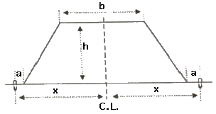
- 10.0 m
- 14.0 m
- 18.0 m
- 22.0 m
(정답률: 55%)
38. 그림과 같은 수준측량에서 B점의 지반고는? (단, α = 13° 20´ 30″, A점의 지반고 = 27.30m, I.H(기계고) = 1.54m, 표척 읽음값 = 1.20m, AB의 수평거리 = 50.13m)
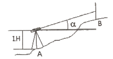
- 38.53 m
- 38.98 m
- 39.40 m
- 39.53 m
(정답률: 34%)
39. 사진판독에 사용하는 주요 요소가 아닌 것은?
- 음영(shadow)
- 형상(shape)
- 질감(texture)
- 촬영고도(flight height)
(정답률: 62%)
40. 경사가 일정한 터널에서 두 점 AB간의 경사거리가 150m 이고 고저차가 15m일 때 AB간의 수평거리는?
- 149.2 m
- 148.5 m
- 147.2 m
- 146.5 m
(정답률: 51%)
3과목: 토지정보체계론
41. 지적행정시스템에서 지적공부 오기정정을 실시하는 자료수정 방법이 아닌 것은?
- 갱신
- 복구
- 삭제
- 추가
(정답률: 56%)
42. 테이블 형태로 데이터베이스를 구축하는 전형적인 모델로 두 개 이상의 테이블을 공통의 키필드에 의해 효율적인 자료관리가 가능한 데이터 모델은?
- 계층형 데이터 모델
- 관계형 데이터 모델
- 객체지향형 데이터 모델
- 네트워크형 데이터 모델
(정답률: 63%)
43. 다음 중 중첩(overlay)의 기능으로 옳지 않은 것은?
- 도형자료와 속성자료를 입력할 수 있게 한다.
- 각종 주제도를 통합 또는 분산관리할 수 있다.
- 다양한 데이터베이스로부터 필요한 정보를 추출할 수 있다.
- 새로운 가설이나 시뮬레이션을 통한 모델링 작업을 수행할 수 있게 한다.
(정답률: 43%)
44. 한국토지정보시스템의 구축에 따른 기대효과로 가장 거리가 먼 것은?
- 다양하고 입체적인 토지정보를 제공할 수 있다.
- 건축물의 유지 및 보수 현황의 관리가 용이해진다.
- 민원처리 기간을 단축하고 온라인으로 서비스를 제공할 수 있다.
- 각 부서 간의 다양한 토지 관련 정보를 공동으로 활용하여 업무의 효율을 높일 수 있다.
(정답률: 74%)
45. 다음 중 2차원 표현의 내용이 아닌 것은?
- 선(Line)
- 면적(Area)
- 영상소(Pixel)
- 격자셀(Grid Cell)
(정답률: 53%)
46. 토지정보시스템의 기본적인 구성요소와 가장 거리가 먼 것은?
- 하드웨어
- 소프트웨어
- 보안시스템
- 데이터베이스
(정답률: 76%)
47. 사용자의 필요에 따라 일정한 기준에 맞추어 자료를 나누는 것을 무엇이라 하는가?
- 질의(query)
- 세선화(thinning)
- 분류(classification)
- 일반화(generalization)
(정답률: 74%)
48. 다음의 위상정보 중 하나의 지점에서 또 다른 지점으로의 이동시 경로 선정이나 자원의 배분 등과 가장 밀접한 것은?
- 중첩성(overlay)
- 연결성(connectivity)
- 계급성(hierarchy or containment)
- 인접성(neighborhood or adjacency)
(정답률: 57%)
49. 위상구조에 대한 설명으로 옳은 것은?
- 노드는 3차원의 위상 기본요소이다.
- 위상구조는 래스터 데이터에 적합하다.
- 최단경로탐색은 영역형 위상구조의 활용예이다.
- 체인은 시작노드와 끝노드에 대한 위상정보를 가진다.
(정답률: 57%)
50. 아래 설명에서 정의하는 용어는?
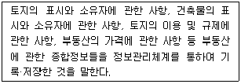
- 지적공부
- 공시지가
- 부동산종합공부
- 토지이용계획확인서
(정답률: 75%)
51. 런 랭스(Run-length) 코드 압축방법에 대한 설명으로 옳지 않은 것은?
- 격자들의 연속적인 연결 상태를 파악하여 압축하는 방법이다.
- 런(run)은 하나의 행에서 동일한 속성값을 갖는 격차를 의미한다.
- Quadtree 방법과 함께 많이 쓰이는 격자자료 압축방법이다.
- 동일한 속성값을 개별적으로 저장하는 대신 하나의 런(run)에 해당하는 속성값이 한 번만 저장된다.
(정답률: 35%)
52. 토지대장 전산화 과정에 대한 설명으로 옳지 않은 것은? (문제 오류로 실제 시험에서는 2,4번이 정답처리 되었습니다. 여기서는 2번을 누르면 정답 처리 됩니다.)
- 1975년 지적법 전문개정으로 대장의 카드화
- 1976년부터 1978년까지 척관법에서 미터법으로 환산등록
- 1982년부터 1984년까지 토지대장 및 임야대장 전산입력
- 1989년 1월부터 온라인 서비스 최초 실시
(정답률: 68%)
53. 데이터베이스의 설명으로 옳지 않은 것은?
- 파일 내 레코드는 검색, 생성, 삭제할 수 있다.
- 데이터베이스의 데이터들은 레코드 단위로 저장된다.
- 파일에서 레코드는 색인(index)을 통해서 효율적으로 검색할 수 있다.
- 효과적인 탐색을 위해 B-tree 방법을 개선한 것이 역파일(inverted file) 방식이다.
(정답률: 66%)
54. 지적측량수행자는 지적측량파일을 얼마의 주기로 데이터를 백업하여 보관하여야 하는가?
- 월 1회 이상
- 연 1회 이상
- 분기 1회 이상
- 반기 1회 이상
(정답률: 62%)
55. 벡터 데이터에 대한 설명이 옳지 않은 것은?
- 디지타이징에 의해 입력된 자료가 해당된다.
- 지도와 비슷하고 시각적 효과가 높으며 실세계의 묘사가 가능하다.
- 위상에 관한 정보가 제공되므로 관망 분석과 같은 다양한 공간분석이 가능하다.
- 상대적으로 자료구조가 단순하며 체인코드, 블록코드 등의 방법에 의한 자료의 압축 효율이 우수하다.
(정답률: 66%)
56. 시·군·구(자치구가 아닌 구 포함) 단위의 지적공부에 관한 지적전산자료의 이용 및 활용에 관한 승인권자로 옳은 것은?
- 광역시장
- 시·도지사
- 지적소관청
- 국토교통부장관
(정답률: 75%)
57. 지적도와 시·군·구 대장 정보를 기반으로 하는 지적행정시스템과의 연계를 통해 각종 지적업무를 수행할 수 있도록 만들어진 정보시스템은?
- 지리정보시스템
- 시설물관리시스템
- 도시계획정보시스템
- 필지중심지정보시스템
(정답률: 67%)
58. 한 픽셀에 대해 8bit를 사용하면 서로 다른 값을 표현할 수 있는 가지 수는?
- 8가지
- 64가지
- 128가지
- 256가지
(정답률: 69%)
59. 부동산종합공부시스템의 전산자료에 대한 구축·관리자로 옳은 것은?
- 업무 담당자
- 업무 부서장
- 국토교통부장관
- 지방자치단체의 장
(정답률: 38%)
60. 토지정보시스템에 사용되는 지도투영법에 대한 설명으로 옳은 것은?
- 우리나라 지적도의 투영에 사용된 지도투영법은 램버트 등각투영법이다.
- 어떤 지도투영법으로 만들어진 자료를 다른 투영법의 자료로 변환하지는 못한다.
- 지구타원체상의 형상을 평면직각좌표로 표현할 때에는 비틀림이 발생한다.
- 토지정보시스템에서 지도투영법은 속성데이터를 표현하는데 사용되는 것이다.
(정답률: 63%)
4과목: 지적학
61. 행정구역제도로 국도를 중심으로 영토를 사방으로 구획하는 '사출도'란 토지구획방법을 시행하였던 나라는?
- 고구려
- 부여
- 백제
- 조선
(정답률: 72%)
62. 밤나무 숲을 측량한 지적도로 탁지부 임시재산정리국 측량과에서 실시한 측량원도의 명칭으로 옳은 것은?
- 산록도
- 관저원도
- 궁채전도
- 율림기지원도
(정답률: 76%)
63. 단식지번과 복식지번에 대한 설명으로 옳지 않은 것은?
- 단식지번이란 본번만으로 구성된 지번을 말한다.
- 단식지번은 협소한 토지의 부번(附番)에 적합하다.
- 복식지번은 본번에 부번을 붙여서 구성하는 지번을 말한다.
- 복식지번은 일반적인 신규등록지, 분할지에는 물론 단지단위법 등에 의한 부번에 적합하다.
(정답률: 70%)
64. 지적공부에 토지등록을 하는 경우에 채택하고 있는 기본원칙에 해당하지 않는 것은?
- 등록주의
- 직권주의
- 임의 신청주의
- 실질적 심사주의
(정답률: 77%)
65. 토지소유권 보호가 주요 목적이며, 토지거래의 안전을 보장하기 위해 만들어진 지적궤도로서 토지의 평가보다 소유권의 한계설정과 경계복원의 가능성을 중요시하는 것은?
- 법지적
- 세지적
- 경제지적
- 유사지적
(정답률: 82%)
66. 토지를 지적공부에 등록함으로써 발생하는 효력이 아닌 것은?
- 공증의 효력
- 대항적 효력
- 추정의 효력
- 형성의 효력
(정답률: 58%)
67. 다음 중 고려시대의 토지 소유 제도와 관계가 없는 것은?
- 과전(科田)
- 전시과(田柴科)
- 정전(丁田)
- 투화전(投化田)
(정답률: 51%)
68. 우리나라의 근대적 지적궤도가 이루어진 연대는?
- 1710년대
- 1810년대
- 1850년대
- 1910년대
(정답률: 77%)
69. 토지의 표시사항은 지적공부에 등록, 공시하여야만 효력이 인정된다는 토지등록의 원칙은?
- 공신주의
- 신청주의
- 직권주의
- 형식주의
(정답률: 67%)
70. 다음 중 도로·철도·하천·제방 등의 지목이 서로 중복되는 경우 지목을 결정하기 위하여 고려하는 사항으로 가장 거리가 먼 것은?
- 용도의 경중
- 공시지가의 고저
- 등록시기의 선후
- 일필일목의 원칙
(정답률: 69%)
71. 다음의 지적궤도 중 토지정보시스템과 가장 밀접한 관계가 있는 것은?
- 법지적
- 세지적
- 경제지적
- 다목적지적
(정답률: 78%)
72. 아래와 같은 지적의 어원이 지닌 공통적인 의미는?
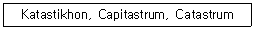
- 지형도
- 조세부과
- 지적공부
- 토지측량
(정답률: 76%)
73. 다음 중 토지조사사업 당시 작성된 지형도의 종류가 아닌 것은?
- 축척 1/5000 도면
- 축척 1/10000 도면
- 축척 1/25000 도면
- 축척 1/50000 도면
(정답률: 49%)
74. 법지적 제도 운영을 위한 토지 등록에서 일반적인 필지 획정의 기준은?
- 개발단위
- 거래단위
- 경작단위
- 소유단위
(정답률: 68%)
75. 다음 중 지적의 구성요소로 가장 거리가 먼 것은?
- 토지 이용에 의한 활동
- 토지 정보에 대한 등록
- 기록의 대상인 지적공부
- 일필지를 의미하는 토지
(정답률: 69%)
76. 토지의 등록 사항 중 경계의 역할로 옳지 않은 것은?
- 토지의 용도 결정
- 토지의 위치 결정
- 필지의 형상 결정
- 소유권의 범위 결정
(정답률: 63%)
77. 다음 중 지적에서의 '경계'에 대한 설명으로 옳지 않은 것은?
- 경계불가분의 원칙을 적용한다.
- 지상의 말뚝, 울타리와 같은 목표물로 구획된 선을 말한다.
- 지적공부에 등록된 경계에 의하여 토지 소유권의 범위가 확정된다.
- 필지별로 경계점들을 직선으로 연결하여 지적공부에 등록한 선을 말한다.
(정답률: 72%)
78. 현대 지적의 성격으로 가장 거리가 먼 것은?
- 역사성과 영구성
- 전문성과 기술성
- 서비스성과 윤리성
- 일시적 민원성과 개별성
(정답률: 69%)
79. 지번의 역할 및 기능으로 가장 거리가 먼 것은?
- 토지 용도의 식별
- 토지 위치의 추측
- 토지의 특정성 보장
- 토지의 필지별 개별화
(정답률: 64%)
80. 일본의 국토에 대한 기초조사로 실시한 국토조사사업에 해당되지 않는 것은?
- 지적조사
- 임야수종조사
- 토지분류조사
- 수조사(水調査)
(정답률: 47%)
5과목: 지적관계
81. 지적재조사에 관한 특별법령상 사업지구의 경미한 변경에 해당하는 사항으로 옳지 않은 것은?
- 사업지구 명칭의 변경
- 1년 이내의 범위에서의 지적재조사사업기간의 조정
- 지적재조사사업 총사업비의 처음 계획 대비 100분의 20 이내의 증감
- 지적재조사사업 대상 필지의 100분의 20 이내 및 면적의 100분의 20 이내의 증감
(정답률: 45%)
82. 다음 중 지목을 부호로 표기하는 지적공부는?
- 지적도
- 임야대장
- 토지대장
- 경계점좌표등록부
(정답률: 68%)
83. 닥나무, 묘목, 관상수 등의 식물을 주로 재배하는 토지의 지목은?
- 전
- 답
- 임야
- 잡종지
(정답률: 52%)
84. 다음 중 축척변경위원회의 심의·의결사항에 해당하는 것은?
- 지적측량 적부심사에 관한 사항
- 지적기술자의 징계에 관한 사항
- 지적기술자의 양성방안에 관한 사항
- 지번별 제곱미터당 금액의 결정에 관한 사항
(정답률: 61%)
85. 지적공부 등록 필지수가 20만 필지 초과 30만 필지 이하일 때 지적서고의 기준면적은?
- 80m2
- 110m2
- 130m2
- 150m2
(정답률: 47%)
86. 축척변경위원회의 구성에 관한 설명으로 옳은 것은?
- 위원장은 위원 중에서 선출한다.
- 10명 이상 15명 이하의 위원으로 구성한다.
- 위원의 3분의 1 이상을 토지소유자로 하여야 한다.
- 토지소유자가 5명 이하일 때에는 토지소유자 전원을 위원으로 위촉하여야 한다.
(정답률: 61%)
87. 공유수면 매립으로 신규등록을 할 경우 지번부여방법으로 옳지 않은 것은?
- 종전 지번의 수에서 결번을 찾아서 새로이 부여한다.
- 그 지번부여지역에서 인접토지의 본번에 부번을 붙여서 지번을 부여한다.
- 최종 지번의 토지에 인접하여 있는 경우는 최종 본번의 다음 순번부터 본번으로 하여 순차적으로 지번을 부여할 수 있다.
- 신규등록 토지가 여러 필지로 되어 있는 경우는 최종 본번의 다음 순번부터 본번으로 하여 순차적으로 지번을 부여할 수 있다.
(정답률: 59%)
88. 다음 중 지적공부의 복구자료에 해당하지 않는 것은?
- 측량 결과도
- 지적측량신청서
- 토지이동정리 결의서
- 부동산등기부 등본 등 등기사실을 증명하는 서류
(정답률: 58%)
89. 다음 중 경계점표지의 규격과 재질에 대한 설명으로 옳은 것은?
- 목제는 아스팔트 포장지역에 설치한다.
- 철못1호는 콘크리트 포장지역에 설치한다.
- 철못2호는 콘크리트 구조물·담장·벽에 설치한다.
- 표석은 소유자의 요구가 있는 경우 설치한다.
(정답률: 59%)
90. 지적업무처리규정에 따른 측량성과도의 작성방법에 관한 설명으로 옳지 않은 것은?
- 측량성과도의 문자와 숫자는 레터링 또는 전자측량시스템에 따라 작성하여야 한다.
- 경계점좌표로 등록된 지역의 측량성과도에는 경계점간 계산거리를 기재하여야 한다.
- 복원된 경계점과 측량 대상토지의 점유현황선이 일치하더라도 점유현황선을 표시하여야 한다.
- 분할측량성과 등을 결정하였을 때에는 “인·허가 내용을 변경하여야 지적공부정리가 가능함” 이라고 붉은색으로 표시하여야 한다.
(정답률: 50%)
91. 도시계획구역의 토지를 그 지방자치단체의 명의로 신규등록을 신청할 때 신청서에 첨부해야 할 서류로 옳은 것은?
- 국토교통부장관과 협의한 문서의 사본
- 기획재정부장관과 협의한 문서의 사본
- 행정안전부장관과 협의한 문서의 사본
- 공정거래위원회위원장과 협의한 문서의 사본
(정답률: 47%)
92. 다음 중 지목을 지적도면에 등록하는 때의 부호 표기가 옳지 않은 것은?
- 광천지 → 광
- 유원지 → 유
- 공장용지 → 장
- 목장용지 → 목
(정답률: 79%)
93. 공간정보의 구축 및 관리 등에 관한 법령에 따른 지목설정의 원칙이 아닌 것은?
- 1필1지목의 원칙
- 자연지목의 원칙
- 주지목추종의 원칙
- 임시적 변경 불변의 원칙
(정답률: 70%)
94. 경위의측량방버으로 세부측량을 한 경우 측량결과도에 적어야 하는 사항으로 옳지 않은 것은?
- 측량기하적
- 측정점의 위치
- 측량대상 토지의 점유현황선
- 측량대상 토지의 경계점 간 실측거리
(정답률: 48%)
95. 지적업무처리규정상 대장등본을 복하여 작성 발급할 때, 대장등본의 규격으로 옳은 것은?
- 가로 10cm, 세로 2cm
- 가로 10cm, 세로 4cm
- 가로 13cm, 세로 2cm
- 가로 13cm, 세로 4cm
(정답률: 63%)
96. 공간정보의 구축 및 관리 등에 관한 법률상 축척변경위원회의 구성 등에 관한 설명 중 ( ) 안에 들어갈 숫자로 옳은 것은?
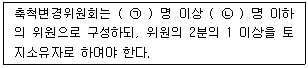
- ㉠ : 5, ㉡ : 10
- ㉠ : 10, ㉡ : 15
- ㉠ : 15, ㉡ : 25
- ㉠ : 25, ㉡ : 30
(정답률: 73%)
97. 공간정보의 구축 및 관리 등에 관한 법령상 도시개발사업 등의 신고에 관한 설명으로 옳지 않은 것은?
- 도시개발사업의 변경 신고 시 첨부서류에는 지번별 조서도 포함된다.
- 도시개발사업의 완료 신고 시에는 지번별 조서와 사업계획도와의 부합여부를 확인하여야 한다.
- 도시개발사업의 착수·변경 또는 완료 사실의 신고는 그 사유가 발생한 날로부터 15일 이내에 하여야 한다.
- 도시개발사업의 완료 신고 시에는 확정될 토지의 지번별 조서 및 종전 토지의 지번별 조서를 첨부하여야 한다.
(정답률: 31%)
98. 지적소관청의 측량결과도 보관 방법으로 옳은 것은?
- 동·리별, 측량종목별로 지번순으로 편철하여 보관하여야 한다.
- 연도별, 동·리별로 지번순으로 편철하여 보관하여야 한다.
- 동·리별, 지적측량수행자별로 지번순으로 편철하여 보관하여야 한다.
- 연도별, 측량종목별, 지적공부정리 일자별, 동·리별로 지번순으로 편철하여 보관하여야 한다.
(정답률: 61%)
99. 아래의 조정금에 관한 이의신청에 대한 내용 중 ( ) 안에 들어갈 알맞은 일자는?
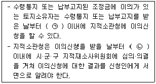
- ㉠ : 30일, ㉡ : 30일
- ㉠ : 30일, ㉡ : 60일
- ㉠ : 60일, ㉡ : 30일
- ㉠ : 60일, ㉡ : 60일
(정답률: 51%)
100. 공간정보의 구축 및 관리 등에 관한 법규상 지적공부를 복구하는 경우 참고자료에 해당되지 않는 것은?
- 측량 결과도
- 토지이동정리 결의서
- 지적공부등록현황 집계표
- 법원의 확정판결서 정본 또는 사본
(정답률: 64%)